どんなゲーム？
ストロングホールドは、1993年に SSI から発売された D&D 公式ライセンスの街づくりシミュレーションです（開発は Stormfront Studios）。
プレイヤーは貴族となって新しい土地に城塞を築き、戦士・魔術師・僧侶・盗賊・ドワーフ・エルフ・ハーフリングの部隊を招いて街を広げていきます。食料・住居・金貨・人気のつり合いを取りながら爵位を上げ、襲ってくる怪物や邪悪なマインダークの軍勢と戦います。街は 3D の風景で描かれます。
D&D Stronghold: Kingdom Simulator
Steam 版「D&D Stronghold: Kingdom Simulator」を日本語で遊べるようにする、非公式のファンメイドパッチです。 紹介の語り、メニュー、指導者と街の数字、建物・部隊・怪物・呪文の名前、建物の情報、出来事のメッセージ、ヘルプの全ページ、住民の訴えまでを日本語にしています。 コピープロテクトの問いには答えの語を表示します。 ゲームの DOSBOX フォルダにファイルを 1 つ置くだけで日本語になり、消せば英語に戻ります。
ストロングホールドは、1993年に SSI から発売された D&D 公式ライセンスの街づくりシミュレーションです（開発は Stormfront Studios）。
プレイヤーは貴族となって新しい土地に城塞を築き、戦士・魔術師・僧侶・盗賊・ドワーフ・エルフ・ハーフリングの部隊を招いて街を広げていきます。食料・住居・金貨・人気のつり合いを取りながら爵位を上げ、襲ってくる怪物や邪悪なマインダークの軍勢と戦います。街は 3D の風景で描かれます。
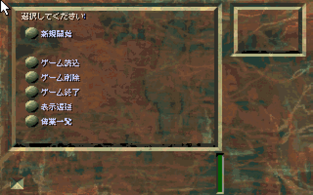
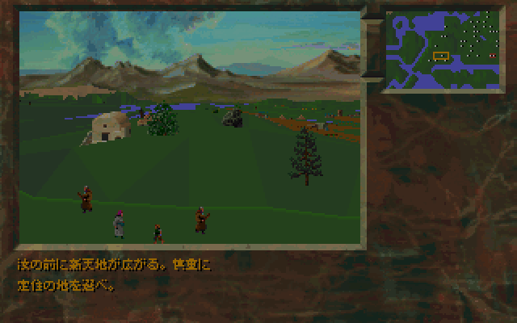
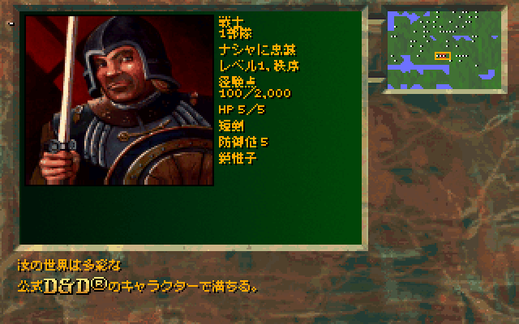
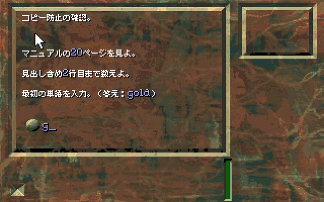
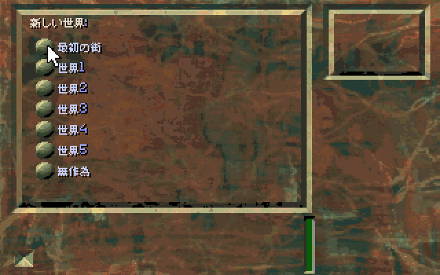
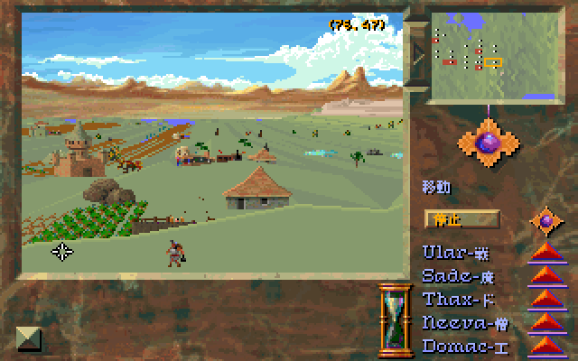
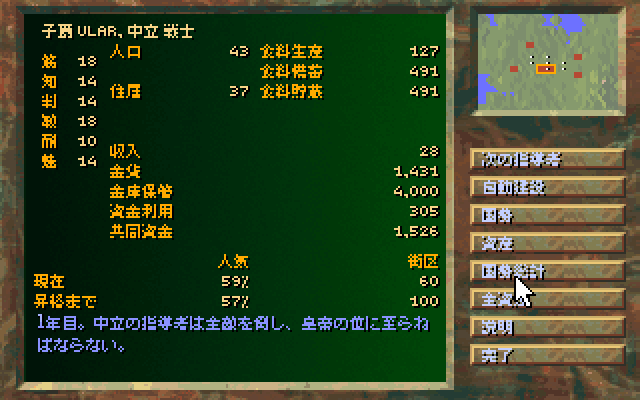
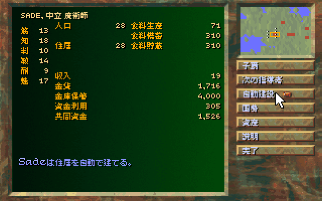
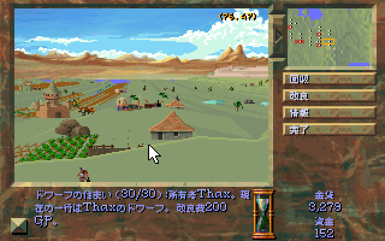
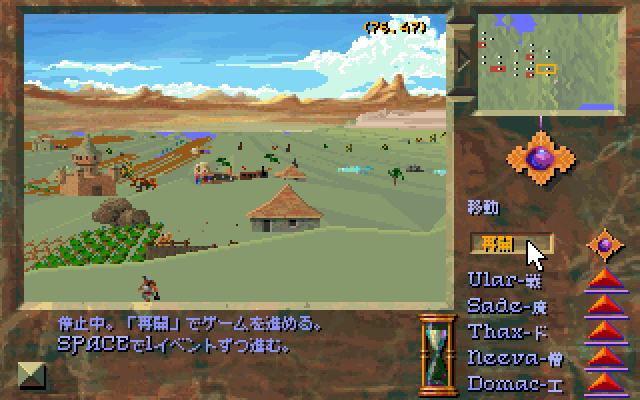
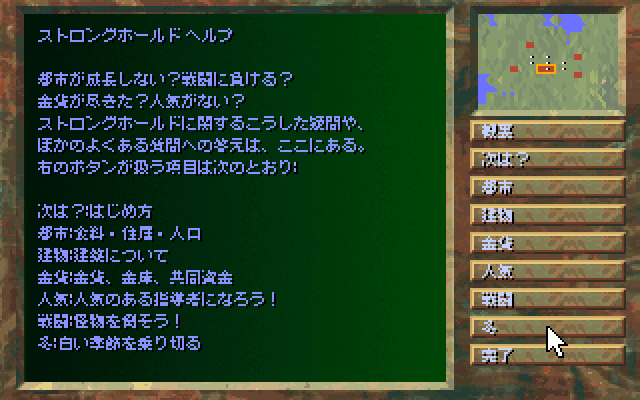
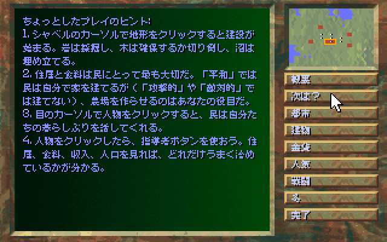
Stronghold_JP.zip を展開します。winmm.dll を、英語版のゲームの DOSBOX フォルダ（DOSBox.exe があるフォルダ）にコピーします。games\Stronghold - Kingdom Simulator - ENG\DOSBOX に進みます。GOG 版の DOSBox（0.74-2.1）にも合わせてあります。GOG 版でも、ゲームを入れたフォルダの中の DOSBOX フォルダに winmm.dll を置いてください（GOG 版の DOSBox 0.74-2.1 で日本語になることは確かめましたが、GOG 版のゲームそのものでの動作はまだ確かめていません）。
ゲームのファイルは書き換えません。日本語化に使うファイル（STRONG.EXE と STRONG.DAT に手を入れたコピー）は、起動時に %LOCALAPPDATA%\SG_JP フォルダに作られます。
DOSBOX フォルダの winmm.dll を消すと英語に戻ります。%LOCALAPPDATA%\SG_JP フォルダも消してかまいません。セーブデータはそのまま使えます。誤訳や不自然な訳に気づいたら、GitHub の Issues で教えてください。